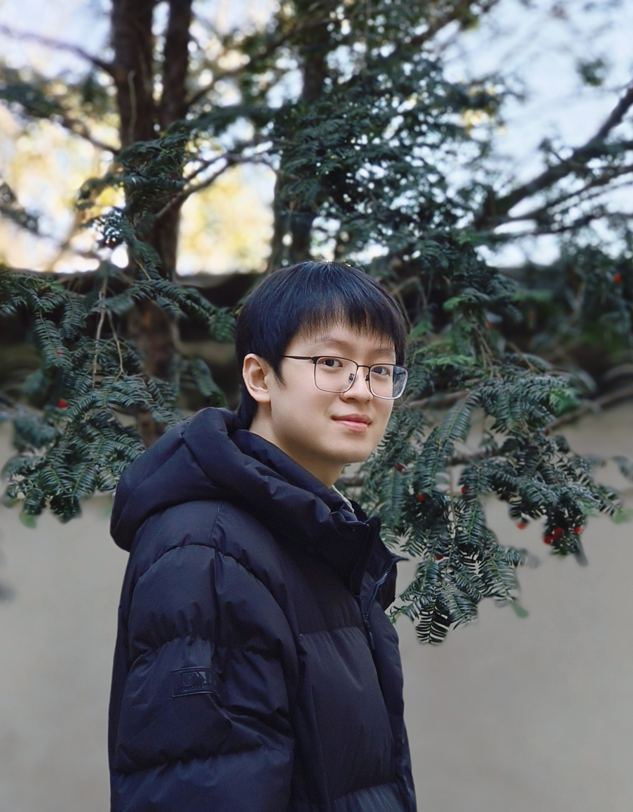

 |
Yuzhou Cao (曹宇舟)
Ph.D. candidate
Scholar Profile: Google Scholar Profile |
[May 2026] Two papers were accepted by ICML'26: (1). consistent surrogate losses for multi-expert learning to defer without underfitting, (2) efficient non-stationary online structured prediction via (convolutional) Fenchel-Young losses.
[Nov 2025] Have passed the PhD confirmation and become a PhD candidate!
[Sep 2025] One paper was accepted by NeurIPS'25 working on convex smooth losses with linear surrogate regret bounds (Spotlight!).
[Oct 2024] Fortunate to become a PhD Fellow at Google .
[Jan 2024] Two papers were accepted by AISTATS'24.
[Jan 2024] Two papers were accepted by ICLR'24.
[Sep 2023] Three papers were accepted by NeurIPS'23.
[Apr 2023] One paper was accepted by ICML'23.
[Jan 2023] One paper on weakly-supervised learning was accepted by AISTATS'23.
[Sep 2022] One paper on classification with rejection was accepted by NeurIPS'22.
[Nov 2021] One paper on weakly-supervised learning was accepted by Pattern Recognition.
[May 2021] One paper on multi-instance learning was accepted by KDD'21.
[May 2021] One paper on learning with similarity information was accepted by ICML'21.
Research Assistant (Aug 2022 - Aug 2023)
Research Intern (Sep 2021 - Jun 2022)
Ph.D. student (Aug 2023 - Present)
B.Sc. in Applied Mathematics. China Agricultural University, Beijing, China (Sep 2016 - Jul 2021)
(* Corresponding author; † Equal contribution)
Shuqi Liu†, Yuzhou Cao†, Lei Feng, Bo An, Luke Ong.
When More Experts Hurt: Underfitting in Multi-Expert Learning to Defer.
In Proceedings of the 43rd International Conference on Machine Learning (ICML'26), PMLR xxx:yyy-zzz, Seoul, South Korea, Jul. 6-11, 2026.
[arXiv]
Shinsaku Sakaue, Han Bao, Yuzhou Cao.
Non-Stationary Online Structured Prediction with Surrogate Losses.
In Proceedings of the 43rd International Conference on Machine Learning (ICML'26), PMLR xxx:yyy-zzz, Seoul, South Korea, Jul. 6-11, 2026.
[arXiv]
Yuzhou Cao, Han Bao, Lei Feng, Bo An.
Establishing Linear Surrogate Regret Bounds for Convex Smooth Losses via Convolutional Fenchel–Young Losses.
Advances in Neural Information Processing Systems 38 (NeurIPS'25), 33200-33237, San Diego, CA, USA, Dec. 2-7, 2025.
(spotlight)
[link]
[arXiv]
Yuzhou Cao, Lei Feng, Bo An.
Consistent Hierarchical Classification with A Generalized Metric.
In Proceedings of the 27th International Conference on Artificial Intelligence and Statistics (AISTATS'24), PMLR 238:4825-4833, Valencia, Spain, May 2-4, 2024.
[link]
Shuqi Liu†, Yuzhou Cao†, Lei Feng, Bo An.
Mitigating Underfitting in Learning to Defer with Consistent Losses.
In Proceedings of the 27th International Conference on Artificial Intelligence and Statistics (AISTATS'24), PMLR 238:4816-4824, Valencia, Spain, May 2-4, 2024.
[link]
Zixi Wei, Senlin Shu, Yuzhou Cao, Hongxin Wei, Bo An, Lei Feng.
Consistent Multi-Class Classification from Multiple Unlabeled Datasets.
In Proceedings of the 12th International Conference on Learning Representations (ICLR'24), Vienna, Austria, May 7-11, 2024.
[link]
Shengjie Zhou, Lue Tao, Yuzhou Cao, Tao Xiang, Bo An, Lei Feng.
On the Vulnerability of Adversarially Trained Models Against Two-faced Attacks.
In Proceedings of the 12th International Conference on Learning Representations (ICLR'24), Vienna, Austria, May 7-11, 2024.
[link]
Yuzhou Cao, Hussein Mozannar, Lei Feng, Hongxin Wei, Bo An.
In Defense of Softmax Parametrization for Calibrated and Consistent Learning to Defer.
Advances in Neural Information Processing Systems 36 (NeurIPS'23), 38485-38503, New Orleans, LA, USA, Dec. 10-16, 2023.
[link]
[arXiv]
Xin Cheng, Yuzhou Cao, Haobo Wang, Hongxin Wei, Bo An, Lei Feng.
Regression with Cost-based Rejection.
Advances in Neural Information Processing Systems 36 (NeurIPS'23), 45172-45196, New Orleans, LA, USA, Dec. 10-16, 2023.
[link]
[arXiv]
Renchunzi Xie, Hongxin Wei, Lei Feng, Yuzhou Cao, Bo An.
On the Importance of Feature Separability in Predicting Out-of-Distribution Error.
Advances in Neural Information Processing Systems 36 (NeurIPS'23), 27783-27800, New Orleans, LA, USA, Dec. 10-16, 2023.
[link]
[arXiv]
Xin Cheng, Yuzhou Cao, Ximing Li, Bo An, Lei Feng*.
Weakly Supervised Regression with Interval Targets.
In Proceedings of the 40th International Conference on Machine Learning (ICML'23), PMLR 202:5428-5448, Honolulu, Hawaii, USA, Jul. 23-29, 2023.
[link]
[arXiv]
Shuqi Liu, Yuzhou Cao, Lei Feng, Qiaozhen Zhang, Bo An.
Consistent Complementary-Label Learning via Order-Preserving Losses.
In Proceedings of the 26th International Conference on Artificial Intelligence and Statistics (AISTATS'23), PMLR 206:8734-8748, Valencia, Spain, Apr. 25-27, 2023.
[link]
Yuzhou Cao, Tianchi Cai, Lei Feng*, Lihong Gu, Jinjie Gu, Bo An, Gang Niu, Masashi Sugiyama.
Generalizing Consistent Multi-Class Classification with Rejection to be Compatible with Arbitrary Losses.
Advances in Neural Information Processing Systems 35 (NeurIPS'22), 521-534, New Orleans, LA, USA, Nov. 28-Dec. 9, 2022.
[link]
Yuzhou Cao, Shuqi Liu, Yitian Xu.
Multi-Complementary and Unlabeled Learning for Arbitrary Losses and Models.
Pattern Recognition, 124:108447, 2022.
[link]
[arXiv]
Yuzhou Cao, Lei Feng, Yitian Xu, Bo An, Gang Niu, Masashi Sugiyama.
Learning from Similarity-Confidence Data.
In Proceedings of the 38th International Conference on Machine Learning (ICML'21), PMLR 139:1272-1282, Virtual, Jul. 18-24, 2021.
[link]
[arXiv]
Lei Feng, Senlin Shu, Yuzhou Cao, Lue Tao, Hongxin Wei, Tao Xiang, Bo An, Gang Niu.
Multiple-Instance Learning from Similar and Dissimilar Bags.
In Proceedings of the 27th ACM SIGKDD Conference on Knowledge Discovery and Data Mining (KDD'21), 374-382, Virtual Event, Singapore, Aug. 14-18, 2021.
[link]
Yuzhou Cao, Yitian Xu.
Multi-Variable Estimation-Based Safe Screening Rule for Small Sphere and Large Margin Support Vector Machine.
Knowledge-Based Systems, 191:105223, 2020.
[link]